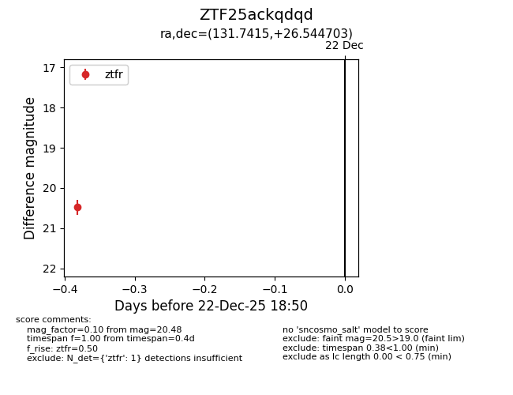
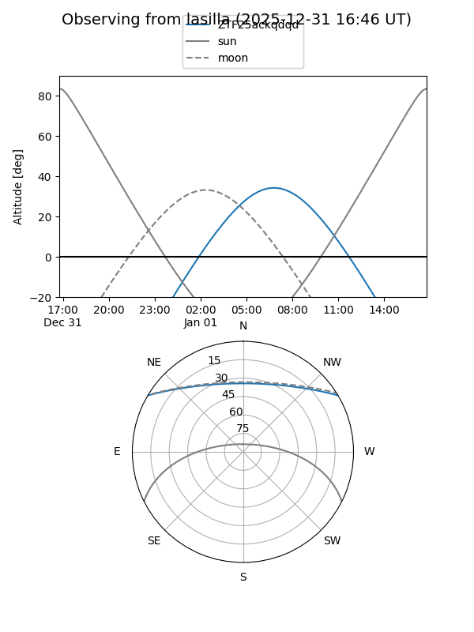
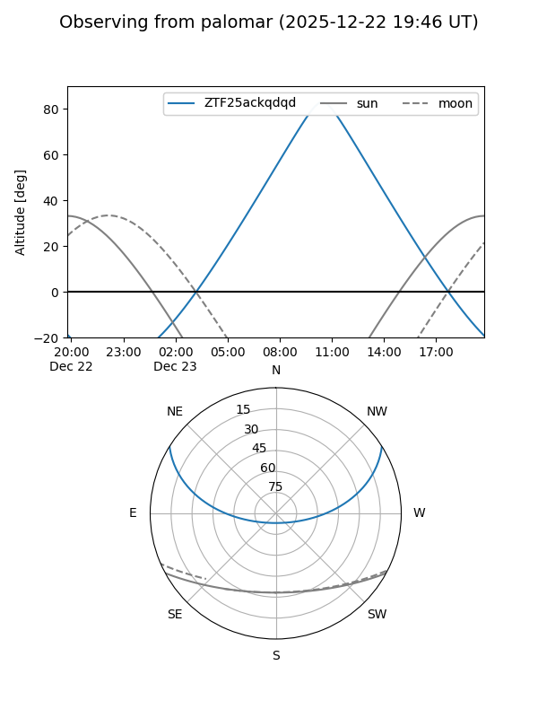

ZTF25ackqdqd
Target ZTF25ackqdqd at 2025-12-31 17:00
Aliases and brokers:
FINK:
Lasair:
ALeRCE:
alt names
ZTF25ackqdqd (ztf,fink_ztf)
Coordinates:
equatorial (ra, dec) = 131.7415,+26.54470
equatorial (HMS+DMS) = 08:46:57.96,+26:32:40.93
galactic (l, b) = (198.5604,+36.03885)
Flags:
Photometry:
last ztfr=20.48
1 ztfr detections
Lightcurve

Visibility


Additional plots